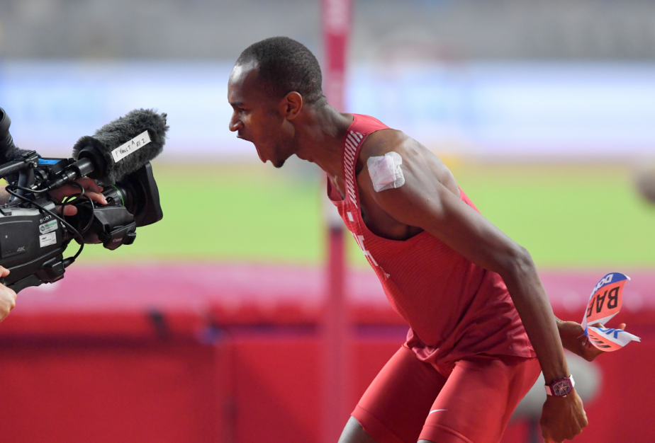
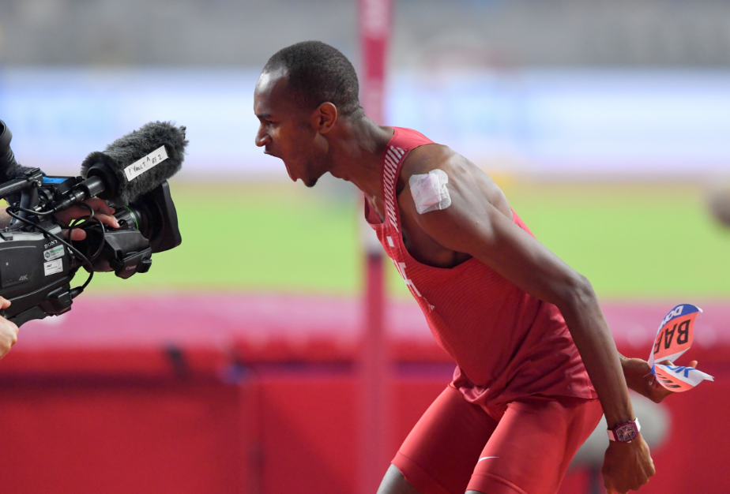

Chevrolet Sponsorship with Mutaz Barshim
Johan Madarasz, Automotive Marketing Manager at Jaidah Group said: “We are immensely proud to have
him represent our brand locally and look forward to continue supporting his athletic journey,
especially with the upcoming Tokyo 2020 Olympic games.”
Mutaz Barshim also commented: “I would like to thank Jaidah Automotive and Chevrolet for their great
support. I am really happy to be part of the Chevrolet Qatar family and look forward to continuing
our strong partnership.”
Jaidah Automotive, the official distributor of Chevrolet in Qatar, launched a brand-new digital
campaign to Mutaz Barshim – at the ongoing International Association of Athletics Federations (IAAF)
World Athletics Championships Doha 2019.
As part of the campaign, Chevrolet Qatar released a video that showcases the star athlete walking
into a loud, cheering audience, symbolising his path towards the IAAF 2019.
The concept of the video was aligned with the arrival of the new performance Sport Truck products
from Chevrolet in 2019, starting with the Tahoe RST equipped with 6.2-litre engine, 10-speed
automatic transmission and a few other performance bits; followed by the Silverado RST in May.
Speaking to the video’s audience, Barshim sought to empower aspiring athletes like himself, saying:
“If you want to be the best, if you want to succeed, you’ve got to keep trying. There’s only one
beast and the beast is you.”
The digital campaign builds on Jaidah Automotive’s sponsorship of the athlete who was announced as
Chevrolet’s brand ambassador earlier this year.
The sponsorship will see Jaidah Automotive supporting Barshim during the IAAF and the 2020 Summer
Olympics.
Mohamed Jaidah, Group executive director of Jaidah Group, said: “Barshim is a prime example of the
dedicated and hard-working Qatari talent who make our country proud. He is an inspiration on so many
levels to the up-and-coming generation of young Qataris. We are not only Barshim’s official
sponsors, but we are also his biggest fans – we look forward to supporting him in his athletic
journey as he continues to represent Qatar in some of the world’s most important sporting
competitions.”
Chevrolet celebrates Mutaz Barshim’s victorious win at the 2019 IAAF World Athletics Championships
Jaidah Automotive, the official distributor of Chevrolet in Qatar, hosted an event to celebrate
Qatar’s world champion high jumper Mutaz Barshim for his recent gold medal victory at the Doha 2019
IAAF World Athletics Championships.
Jaidah Automotive provided its Chevrolet audience and fans an opportunity to meet and congratulate
the star athlete in person at the Jaidah Square Showroom. The Chevrolet team hosted visitors coming
to show their support and get an autograph from the star athlete.


 
